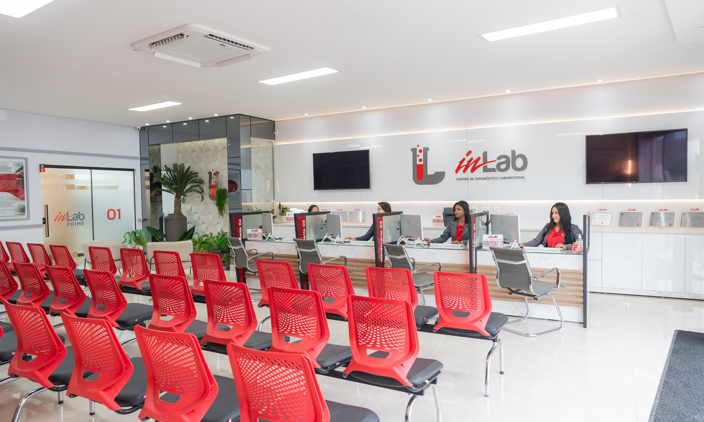
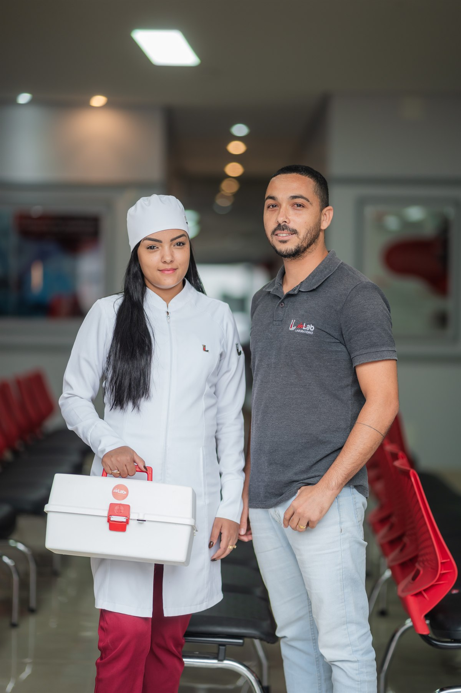
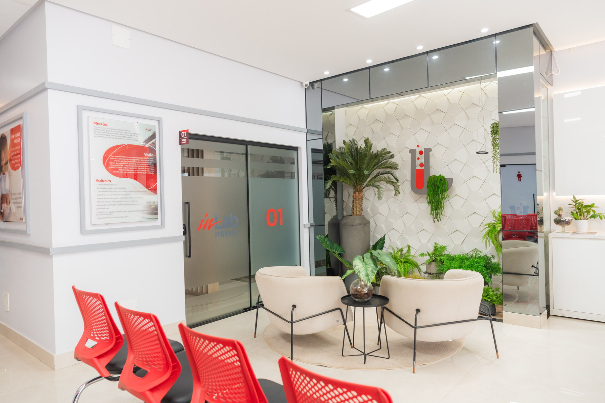
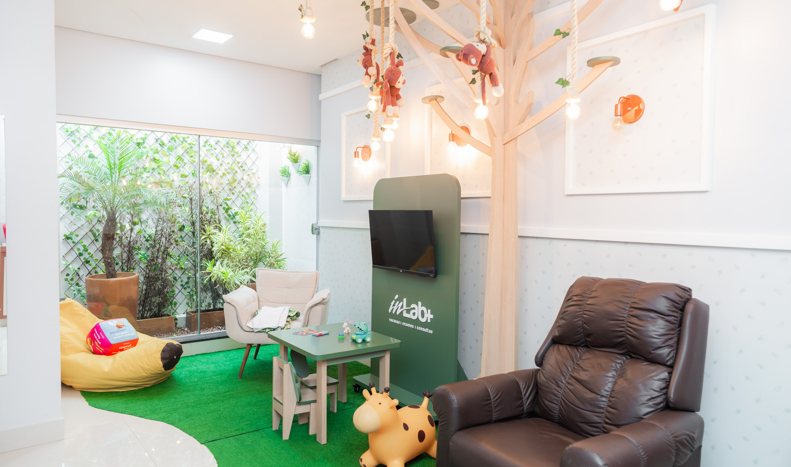
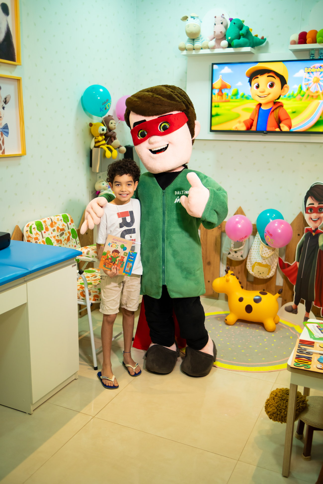
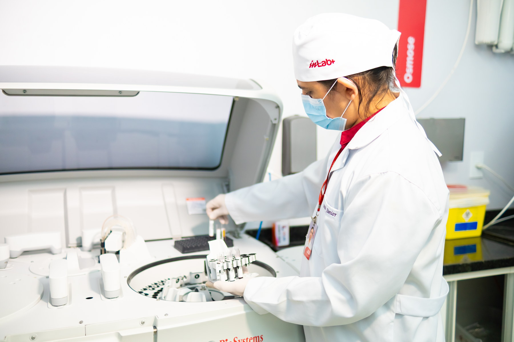
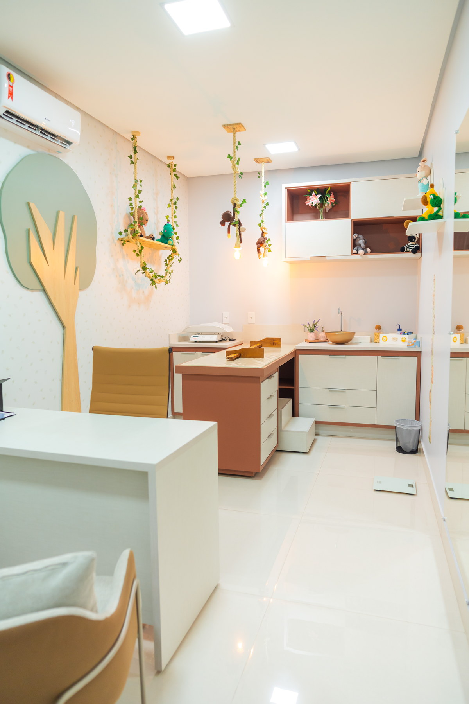
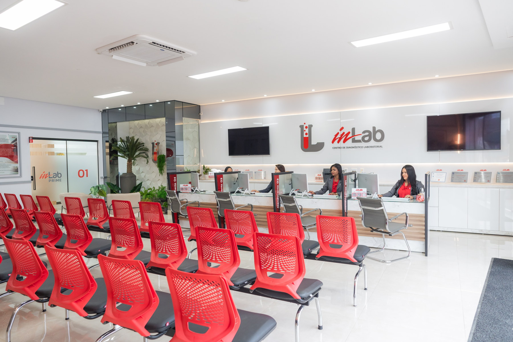
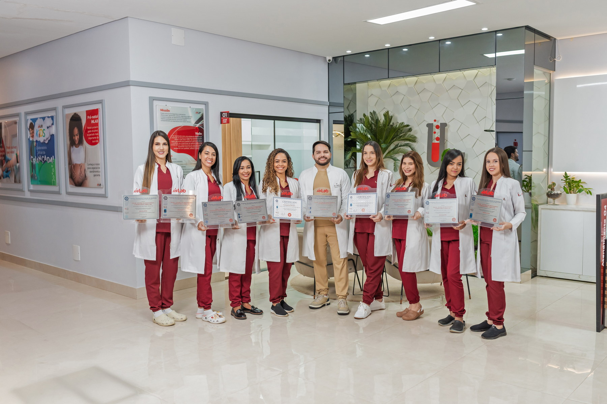
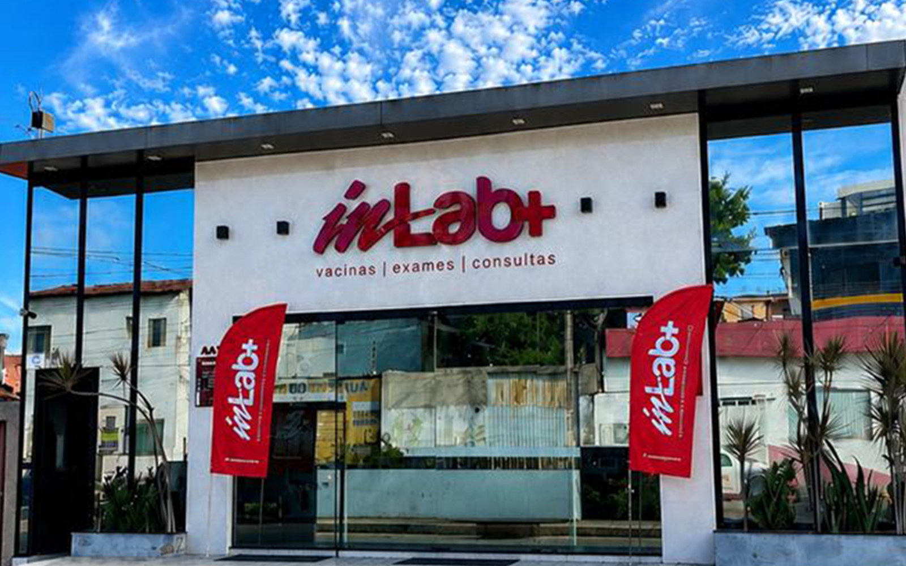

Atendimento
Rede INLAB+
Exames, vacinas e consultas reunidos em uma estrutura preparada para cuidar de você e da sua família.
Resultados de examesExames Vacinas Consultas
Atendimento integrado
Serviços e facilidades

Atendimento

Coleta domiciliar

Conforto e privacidade
Planos e convênios
Atendimento com marcas reconhecidas e uma equipe pronta para ajudar você a confirmar cobertura e disponibilidade.
Cuidado sob medida
Escolha o acompanhamento que combina com a sua rotina e fase de vida.
INLAB+ Kids
O INLAB+ Kids foi pensado para oferecer uma experiência mais acolhedora às crianças durante exames, vacinação e atendimento infantil.


Cuidado próximo
Nossa estrutura




Qualidade e tecnologia
Cuidado, estrutura e tecnologia trabalham juntos para oferecer uma experiência organizada em cada etapa do atendimento.
Presença regional

Barreiras
Barreiras
INLAB+ Vet
Uma frente da Rede INLAB+ dedicada ao apoio diagnóstico veterinário para clínicas e profissionais parceiros.
Atendimento direto
Fale diretamente com a nossa equipe.